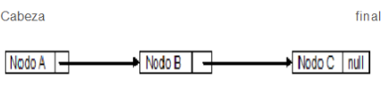
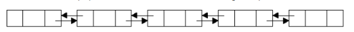
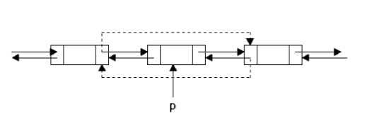
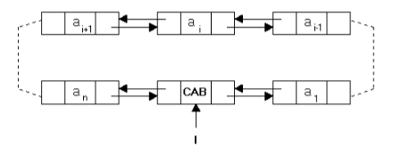

Una lista enlazada o estructura ligada, es una estructura lineal que almacena una colección de elementos generalmente llamados nodos, en donde cada nodo puede almacenar datos y ligas a otros nodos. De esta manera los nodos pueden localizarse en cualquier parte de la memoria, utilizando la referencia que lo relaciona con otro nodo dentro de la estructura.
Las listas enlazadas son estructuras dinámicas que se utilizan para almacenar datos que están cambiando constante mente. A diferencia de los vectores, las estructuras dinámicas se expanden y se contraen haciéndolas más flexibles a la hora de añadir o eliminar información.
Las listas enlazadas permiten almacenar información en posiciones de memoria que no sean contiguas; para almacenar la información contienen elementos llamados nodos. Estos nodos poseen dos campos uno para almacenar la información o valor del elemento y otro para el enlace que determina la posición del siguiente elemento o nodo de la lista.
Lo más recomendable y flexible para la creación de un nodo es utilizar un objeto por cada nodo, para ello debe comprender cuatro conceptos fundamentales que son:
Una clase auto-referenciada es una clase con al menos un campo cuyo tipo de referencia es el nombre de la misma clase.
public clase Nodo{{'{'}}
Object elemento;
Nodo siguiente;
//métodos
{{'}'}}
El código anterior es una clase auto-referenciada porque su campo siguiente tiene el tipo Nodo.
El nodo es un objeto creado a partir de una clase auto-referenciada.
El campo de enlace es la variable de instancia que contiene el tipo que corresponde con el nombre de la clase (para el caso anterior variable siguiente).
El enlace es el contenido del campo de enlace, que hace referencia (guarda la dirección) a otro nodo.
Las operaciones que se pueden hacer con una lista son:
Una lista enlazada simple es una colección de nodos que tienen una sola dirección y que en conjunto forman una estructura de datos lineal. Cada nodo es un objeto compuesto que guarda una referencia a un elemento (dato) y una referencia a otro nodo (dirección).
La referencia que guarda un nodo a otro nodo se puede considerar un enlace o un puntero hacia el segundo nodo y el salto que los relaciona recibe el nombre de salto de enlace o salto de puntero. El primer nodo de una lista recibe el nombre de cabeza, cabecera o primero y el último es llamado final, cola o último (es el único nodo con la referencia a otro objeto como nula).
Un nodo de una lista enlazada simple puede determinar quien se encuentra después de él, pero no puede determinar quien se encuentra antes, ya que solo cuenta con la dirección del nodo siguiente pero no del anterior.
Los elementos cabeza y final de la figura son referencias creadas a partir de la clase que se crean los nodos.
struct nodo{{'{'}}
tipoelemento elemento;
struct nodo *sgte;
{{'}'}};
typedef struct nodo *Tlista;
Inserción de elementos al final de la lista
Si está vacía la lista es decir inicio == null
Si ya existe por lo menos un nodo
Inserción de elementos al inicio de la lista
Verificar si la lista está vacía.
Si está vacía la lista es decir inicio == null
Si ya existe por lo menos un nodo
Inserción en alguna posición especifica
Verificar si la lista está vacía.
Si está vacía la lista es decir inicio == null
Si ya existe por lo menos un nodo
Una lista doblemente enlazada es una colección de nodos que cuentan con dos direcciones en cada uno de sus nodos y que en conjunto forman una estructura de datos lineal. Cada nodo es un objeto
compuesto que guarda una referencia a un elemento (dato), una referencia al nodo anterior (dirección predecesora) y una referencia al nodo siguiente (dirección sucesora).
Un nodo de una lista enlazada doble puede determinar quien se encuentra después de él y quien se encuentra antes de él, ya que cuenta con las direcciones de los nodos siguiente y anterior.
Una ventaja de las listas doblemente enlazadas es que podemos usar un puntero a la celda que contiene el i-ésimo elemento de una lista para representar la posición i, mejor que usar el puntero a la celda anterior, aunque lógicamente, también es posible la implementación similar a la expuesta en las listas simples haciendo uso de la cabecera. El único precio que pagamos por estas características es la presencia de un puntero adicional en cada celda y consecuentemente procedimientos algo más largos para algunas de las operaciones básicas de listas. Si usamos punteros (mejor que cursores) podemos declarar celdas que consisten en un elemento y dos punteros a través de:
typedef struct celda{{'{'}}
tipoelemento elemento;
struct celda *siguiente,*anterior;
{{'}'}}tipocelda;
typedef tipocelda *posicion;
El procedimiento anterior se expresa de la siguiente manera:
Donde los trazos continuos denotan la situación inicial y los punteados la final. El ejemplo visto se ajusta a la supresión de un elemento o celda de una lista situada en medio de la misma. Para obviar los problemas derivados de los elementos extremos (primero y último) es práctica común hacer que la cabecera de la lista doblemente enlazada sea una celda que efectivamente complete el círculo, es decir, el anterior a la celda de cabecera sea la última celda de la lista y la siguiente la primera. De esta manera no necesitamos chequear para NULL en el anterior procedimiento borrar.
Por consiguiente, podemos realizar una implementación de listas doblemente enlazadas con cabecera tal que tenga una estructura circular en el sentido de que dado un nodo y por medio de los punteros podemos volver hasta él como se puede observar en la figura (de forma análoga para anterior).
Es importante notar que, aunque la estructura física de la lista puede hacer pensar que mediante la operación siguiente podemos alcanzar de nuevo un nodo de la lista, la estructura lógica es la de una lista y por lo tanto habrá una posición primero y una posición fin de forma que al aplicar una operación anterior o siguiente respectivamente sobre estas posiciones el resultado será un error.
Respecto a la forma en que trabajarán las funciones de la implementación que proponemos hay que hacer constar los siguientes puntos:
Dentro del tipo abstracto de listas doblemente enlazadas podemos proponer las siguientes primitivas:
tLista crear ()
Argumentos: Ninguno.
Efecto: (Constructor primitivo). Crea un objeto del tipo tLista.
void destruir (tLista l)
Argumentos: Una lista.
Efecto: Destruye el objeto l liberando los recursos que empleaba. Para volver a usarlo habrá que crearlo de nuevo.
tPosicion primero (tLista l)
Argumentos: Una lista.
Efecto: Devuelve la posición del primer elemento de la lista.
tPosicion fin (tLista l)
Argumentos: Una lista.
Efecto: Devuelve la posición posterior al último elemento de la lista.
void insertar (tElemento x, tPosicion p, tLista l)
Argumentos:
l: Es modificada.
p: Es una posición válida para la lista l.
x: Dirección válida de un elemento del tipo T con que se instancia la lista, distinta de NULL.
Efecto: Inserta elemento x en la posición p de la lista l desplazando todos los demás elementos en una posición.
void borrar (tPosicion *p, tLista l)
Argumentos:
l: Es modificada.
p: Es una posición válida para la lista l.
Efecto: Elimina el elemento de la posición p de la lista l desplazando todos los demás elementos una posición.
void borrar (tPosicion *p, tLista l)
Argumentos:
l: Una lista.
p: Es una posición válida para la lista l.
Efecto: Devuelve el elemento que se encuentra en la posición p de la lista l.
void borrar (tPosicion *p, tLista l)
Argumentos:
l: Una lista.
p: Es una posición válida para la lista l, distinta de fin(l).
Efecto: Devuelve la posición siguiente a p en l.
void borrar (tPosicion *p, tLista l)
Argumentos:
l: Una lista.
p: Es una posición válida para la lista l, distinta de primero(l).
Efecto: Devuelve la posición que precede a p en l.
tPosicion posicion (tElemento x, tLista l)
Argumentos:
l: Una lista.
x: Dirección válida de un elemento del tipo T con que se instancia la lista, distinta de NULL.
Efecto: Si x se encuentra entre los elementos de la lista l, devuelve la posición de su primera ocurrencia. En otro caso, devuelve la posición fin(l).